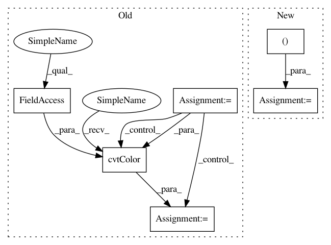

6917d8a3dbf6617f02b1247fd50fbc20d3cb6fd4,codes/data/LR_dataset.py,LRDataset,__getitem__,#LRDataset#Any#,29
Before Change
// get LR image
LR_path = self.paths_LR[index]
if self.opt["data_type"] == "img":
img_LR = cv2.imread(LR_path, cv2.IMREAD_UNCHANGED)
else:
img_LR = util.read_lmdb_img(self.LR_env, LR_path)
img_LR = img_LR.astype(np.float32) / 255.
if img_LR.ndim == 2:
img_LR = np.expand_dims(img_LR, axis=2)
H, W, C = img_LR.shape
// channel conversion
if self.opt["color"]:
img_LR = util.channel_convert(C, self.opt["color"], [img_LR])[0]
// HWC to CHW, BGR to RGB, numpy to tensor
if img_LR.shape[2] == 3:
img_LR = cv2.cvtColor(img_LR, cv2.COLOR_BGR2RGB)
img_LR = torch.from_numpy(np.ascontiguousarray(np.transpose(img_LR, (2, 0, 1)))).float()
return {"LR": img_LR, "LR_path": LR_path}
After Change
// HWC to CHW, BGR to RGB, numpy to tensor
if img_LR.shape[2] == 3:
img_LR = img_LR[:, :, [2, 1, 0]]
img_LR = torch.from_numpy(np.ascontiguousarray(np.transpose(img_LR, (2, 0, 1)))).float()
return {"LR": img_LR, "LR_path": LR_path}
In pattern: SUPERPATTERN
Frequency: 3
Non-data size: 6
Instances
Project Name: xinntao/BasicSR
Commit Name: 6917d8a3dbf6617f02b1247fd50fbc20d3cb6fd4
Time: 2018-06-10
Author: wxt1994@126.com
File Name: codes/data/LR_dataset.py
Class Name: LRDataset
Method Name: __getitem__
Project Name: xinntao/BasicSR
Commit Name: 6917d8a3dbf6617f02b1247fd50fbc20d3cb6fd4
Time: 2018-06-10
Author: wxt1994@126.com
File Name: codes/data/LR_dataset.py
Class Name: LRDataset
Method Name: __getitem__
Project Name: IBM/adversarial-robustness-toolbox
Commit Name: 601d77a77a55323770bb2b214aa8844538b13d1f
Time: 2018-09-25
Author: Maria-Irina.Nicolae@ibm.com
File Name: art/visualization.py
Class Name:
Method Name: convert_to_rgb
Project Name: dmlc/gluon-cv
Commit Name: fdd55d36c05c747643fc98430a7f9b787b6cec16
Time: 2019-08-29
Author: yizhu59@gmail.com
File Name: gluoncv/data/kinetics400/classification.py
Class Name: Kinetics400
Method Name: _TSN_RGB